“The recent Central Virginia Regional Jail population forecast highlighted CJDTI's ability to translate data into actionable insights. I am excited to see the program continue to grow and support criminal justice agencies through research, analytics, and innovative partnerships.”
-Matthew Vitale, Criminal Justice Planner
About Us
The Criminal Justice Data Training Initiative (CJDTI) was founded in 2025 by the Jefferson Trust with the main objective of equipping undergraduate students with data science skills and personal experiences to drive meaningful change in the local community. Students work closely with the Evidence-Based Decision Making (EBDM) team, which integrates multiple facets of the criminal justice system, including the Charlottesville Police Department and the Central Virginia Regional Jail. All the while, students are gaining technical fluency and a deeper understanding of justice and community. At its core, CJDTI represents a model for what passion, commitment, and research can look like outside of the classroom.
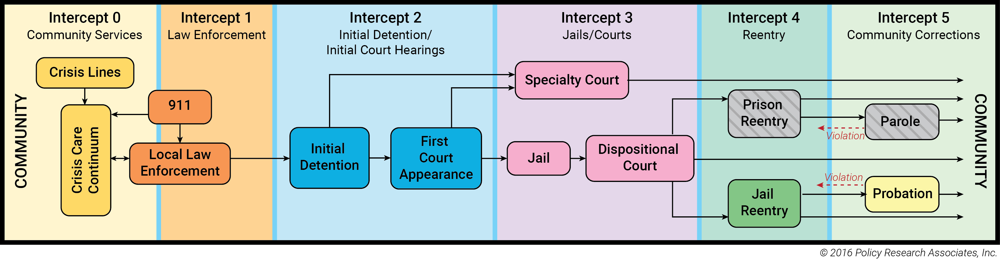
The PRA model helps to outline the potential key points where individuals who are involved in the criminal justice system get redirected to community-based mental health and substance use services. CJDTI aims to intercept individuals at many different points outlined in this model to ensure that community members have access to the support and resources necessary at every stage. By working in relationship with different criminal justice organizations at different intercepts, CJDTI strives to promote recovery, reduce recidivism, and strengthen the well-being of the community.
Our Team

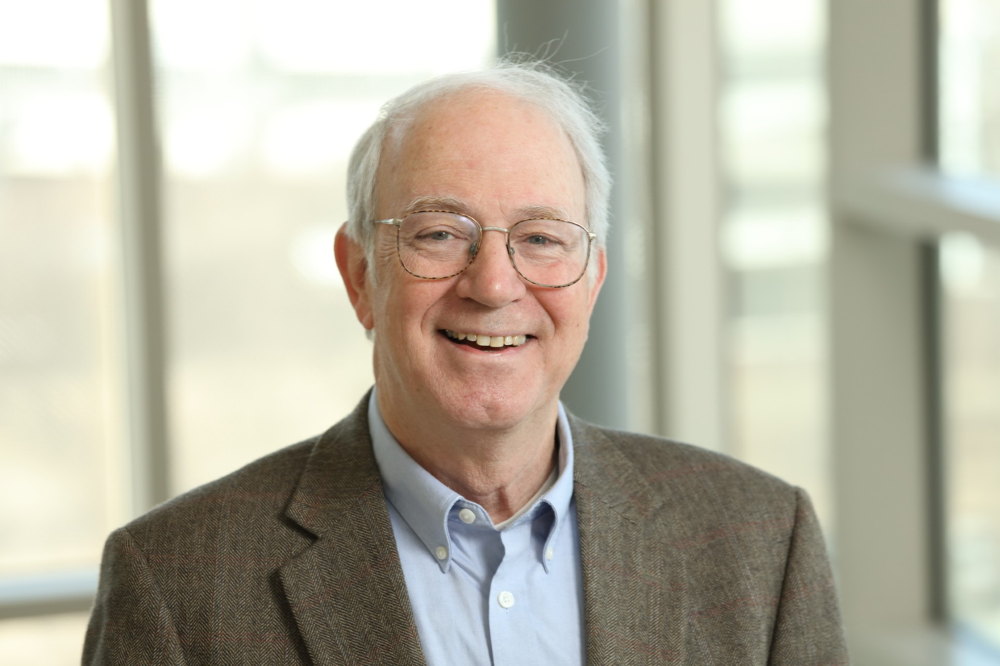
Partner Organizations
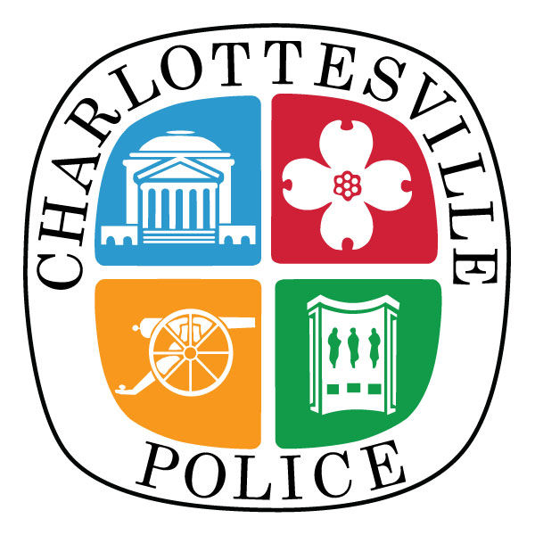
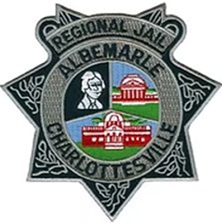
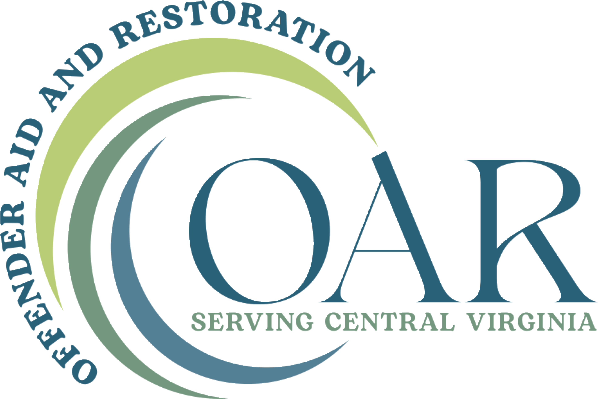
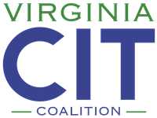
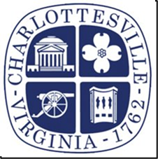
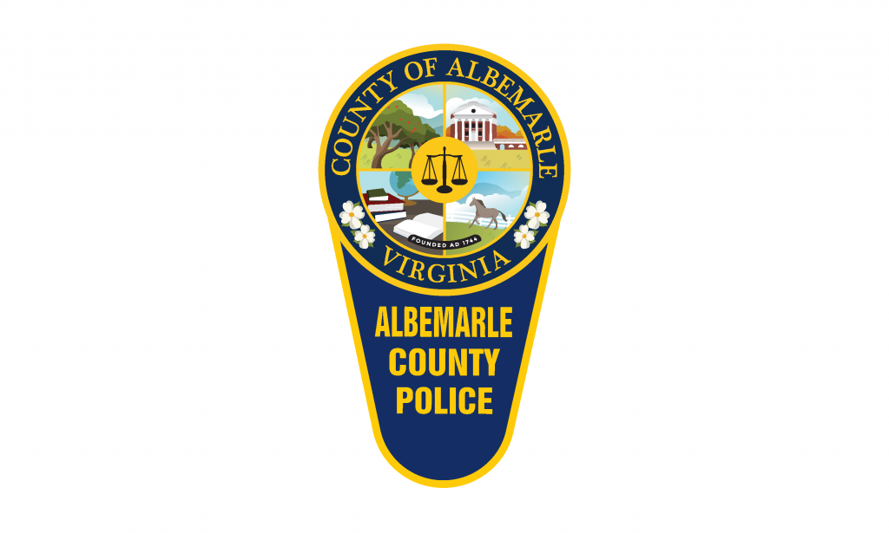
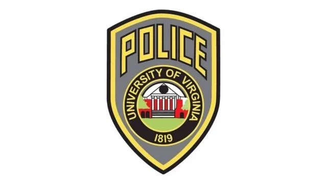
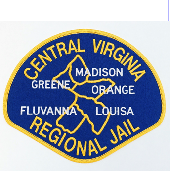
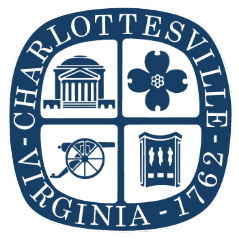
- Charlottesville Police Department (CPD)
- Albemarle-Charlottesville Regional Jail (ACRJ)
- Evidence Based Decision Making Team (EBDM)
- Offender Aid and Restoration (OAR)
- Region 10 (R10)
- Thomas Jefferson Area CIT (TJACIT)
- City of Charlottesville Circuit Court
- Albemarle County Police Department (ACPD)
- UVA Police Department (UPD)
- Central Virginia Regional Jail (CVRJ)
- Community Criminal Justice Board (CCJB)
- District 9 Probation and Parole Office
Alumni
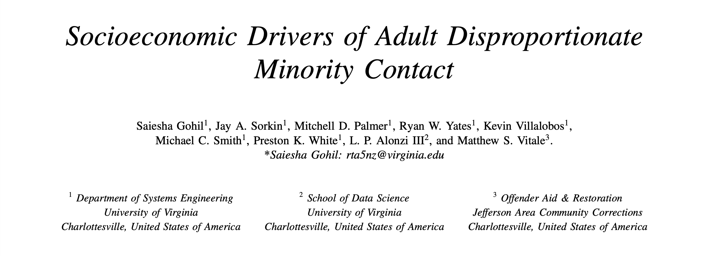
Saiesha Gohil, Jay A. Sorkin, Ryan W. Yates, Mitchell D. Palmer, Kevin Villalobos
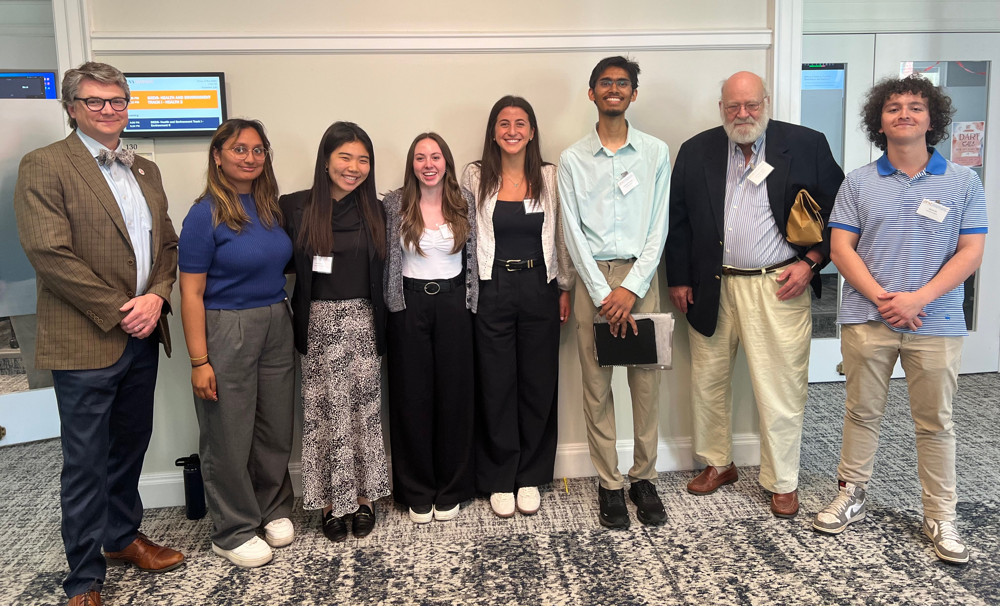
Best Paper Winners in Track 1 - Policy & Decision Analysis
Mohini Gupta, Caroline Lee, Sarah Bedal, Olivia Bernard, Sudarshan Atmavilas, Zakaria Afi
Donors
We gratefully acknowledge the support of the following organizations:
Publications
SIEDS Papers
The Systems and Information Engineering Design Symposium (SIEDS) is a student-focused international forum for applied research, development, and design in Systems and Information Engineering.
1 / 4
Undergraduate Symposium Posters
An annual opportunity for students to present what they have researched to a broader audience from all disciplines, encouraging students to engage in a range of topics.
Forecasting Jail Bed Utilization for Central Virginia Regional Jail
Our first CJDTI poster presented at the 2026 UVA Undergraduate Symposium that displays a forecasting model to support the Central Virginia Regional Jail's decision making.
View Poster →Press
Peter Alonzi Earns Public Service Recognition for Community-Engaged Teaching in Criminal Justice Reform
Peter Alonzi received the Excellence in Public Service Award in April to recognize his commitment to community-engaged teaching and his extraordinary contributions to the University of Virginia’s public mission.
Read Full Article →Peter Alonzi Receives $78K Jefferson Trust Award
Professor Peter Alonzi has been awarded a $78,000 grant from The Jefferson Trust to establish the Criminal Justice Data Training Initiative (CJDTI), a program that will create unique undergraduate research opportunities while making a meaningful impact on the local community.
Read Full Article →Peter Alonzi Recognized with 2026 Breakthrough Prize in Fundamental Physics
The University of Virginia School of Data Science celebrates a major international honor recognizing the contributions of Peter Alonzi, assistant professor of data science, as part of a global scientific collaboration that received the 2026 Breakthrough Prize in Fundamental Physics.
Read Full Article →Inclusive Excellence Grant Will Improve Undergraduate Learning Experience
The School of Data Science was recently awarded a $9,600 Inclusive Excellence grant from the University of Virginia’s Division for Diversity, Equity and Inclusion. This funding will support a year-long project to make undergraduate courses more accessible and inclusive, led by Assistant Professor of Data Science Peter Alonzi and Associate Director of Equity & Belonging Rebecca Schmidt.
Read Full Article →Classes
Contact Us
Our code lives on github.
If you are interested in joining the CJDTI, please fill out the interest form below or email Professor Alonzi.
CJDTI Interest Form
Interested in undergraduate research with criminal justice data? Share your information below and we will be in touch.
Open form in a new window →